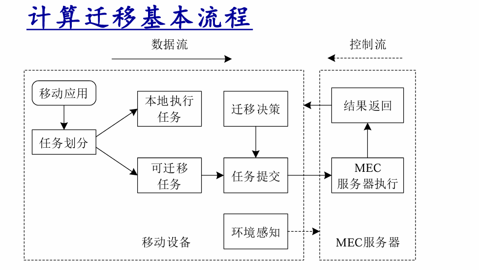

计算迁移与智能终端
计算迁移（Computation Offloading）
在当前移动互联网生态下，移动终端面临着严峻的“资源约束悖论”：增强现实（AR/VR）、云游戏、深度学习推理等新型应用对算力的需求呈指数级增长，而移动终端受限于物理体积，其电池能量与处理能力存在天然瓶颈。为了化解这一战略冲突，计算迁移（Computation Offloading，亦称计算卸载）成为了边缘计算架构的核心范式。
核心定义与分配逻辑
计算迁移是指将移动终端设备中部分计算量大的任务，根据一定的迁移策略，合理地分配至资源充足的计算平台。其分配路径通常分为两类：
- 近距离迁移： 分配至本地微云（Cloudlet/Edge Cloud），强调极低时延与高带宽响应。
- 远端迁移： 分配至远端云计算平台，利用海量弹性算力处理非时延敏感型大规模任务。
计算迁移不仅是简单的任务转移，更是移动网络架构演进的必然选择。其战略目标主要体现在：
- 能力扩展： 突破终端硬件的物理限制，使低功耗设备能够运行原本无法承载的高性能应用。
- 能耗降低： 通过远程执行高负载任务，显著减少终端电量消耗，延长续航并缓解发热。
- 应用范围扩大： 进一步扩大云计算技术在移动网络中的应用范围（JLU考点术语），推动移动终端向“瘦客户机”演进。
应用驱动：计算迁移类型
不同应用场景对资源的敏感度存在显著差异，这种差异直接指导了迁移决策的权重。
| 任务类型 | 任务特点 | 关键影响因素 | 典型应用场景 |
|---|---|---|---|
| 交互型 | 执行中需与用户高频实时交互 | 网络状态（带宽、延时） | 云游戏、AR/VR |
| 计算型 | 涉及大规模、高强度算力消耗 | 硬件资源（CPU/GPU能力） | 计算机视觉、视频渲染 |
| 数据型 | 需访问并处理海量异地数据 | 缓存命中率（边缘侧内容） | 地图导航、大数据分析 |
垂直支撑体系：迁移方案与服务模式的层级映射
计算迁移的工程实现必须依托于垂直化的支撑架构。
| 层次划分 | 对应即服务模式（EC-XaaS） | 核心组件与功能映射 |
|---|---|---|
| 应用服务层 | EC-SaaS软件即服务 | 进程调用、服务支持、特定应用软件、数据信息、应用接口 |
| 平台需求层 | EC-PaaS平台即服务 | 操作系统支持、程序运行时环境（Runtime）、数据处理模型 |
| 硬件需求层 | EC-IaaS基础设施即服务 | 虚拟化服务、计算节点（CPU）、存储资源、网络设施、DC物理设施 |
在垂直架构中，QoS管理与安全管理处于战略核心：
- QoS管理（服务质量管理）： 核心在于资源需求预测与实时监控（包括带宽、CPU、内存、能效）。它决定了迁移是否能满足业务的时延门槛。
- 安全管理： 负责迁移过程中的数据加密、隐私保护及分布式处理中的状态同步，是迁移方案被商业化采纳的前提。
计算迁移方法实现方法：粒度与时机的多维权衡
计算迁移的设计本质是迁移成本（通信+计算开销）与系统收益（能效+时延优化）之间的博弈。
维度一：划分粒度对比
- 粗粒度（操作、应用、虚拟机）：
- 特点： 通信逻辑简单，划分效率高。
- 局限： 迁移数据量极大（如整个VM镜像），在快速移动或网络不稳定的场景下，迁移耗时长且易失败。
- 细粒度（方法、类、对象、线程）：
- 特点： 灵活性高，可实现代码级精准“减负”，极大降低能耗。
- 劣势： 程序静态分析与代码插桩复杂度高，通信频率增加，系统维护开销大。
维度二：划分时机权衡
- 静态划分： 开发阶段预设策略，开销极小。但其致命缺陷是无法适应多变的移动网络环境。
- 动态划分： 运行期实时决策。系统需实时监控资源、分析和预测应用需求，虽然这引入了额外的监控与分析开销，但其环境适应性是现代高能效MEC系统的基石。
计算迁移的生命周期：宏观流程与底层工作流
一个完整的迁移周期由以下六个标准步骤构成，其顺序严禁颠倒：
- 代理发现： 扫描并识别可用的边缘服务器或云端迁移代理。
- 任务分割： 将应用解析为“本地执行”与“可迁移执行”两个部分。
- 迁移决策： 结合环境感知（带宽、延时、终端剩余电量、云端负载等）判断是否执行迁移。
- 任务提交： 将选定的任务及其相关状态数据打包发送。
- 任务执行： MEC服务器或云端完成计算逻辑。
- 结果反馈： 将执行结果回传至终端，并与本地状态融合。
底层原理穿透（操作系统级行为）
当决策引擎触发迁移动作时，底层系统类库将执行以下四个核心动作，以保障程序运行的连续性：
- 暂停保存： 应用程序向系统类库发送暂停请求，保存当前线程栈、变量、程序计数器等运行状态。
- 通知代理： 系统类库向本地代理模块发送迁移信号及元数据。
- 读取传输： 本地代理读取保存的状态信息，并从缓存中提取相关代码或虚拟机（VM）镜像，通过网络传输至服务器。
- 云端恢复： 远端代理创建新实例，复制并恢复运行环境，实现任务的接力执行。

MAUI vs. CloneCloud 架构对比
在工程实现路线上，MAUI与CloneCloud分别代表了细粒度与粗粒度的两种成熟哲学。
MAUI（细粒度路线：基于RPC）
MAUI采用端云对称的支撑架构，通过远程过程调用（RPC）机制实现代码段的迁移。
- 核心组件： Profiler（性能分析器）、Solver（决策求解器）、Proxy（代理）及MAUI运行时。
- 逻辑： 实时评估方法运行开销，由Solver计算最优划分，通过RPC在服务器执行高能耗方法。
CloneCloud（粗粒度路线：基于VM）
CloneCloud侧重于通过虚拟机（VM）封装来简化迁移逻辑，减少程序分割的开销。
- 实现思路： 1. 在云端完全克隆移动终端的运行环境（云端全克隆）；2. 利用近端强算力节点作为代理服务器进行VM级同步。
- 核心差异： MAUI强调代码级精细插桩（RPC），而CloneCloud强调应用级整体迁移（VM镜修）。
评论区 - 03_计算迁移与智能终端